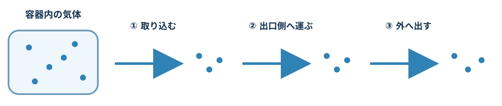
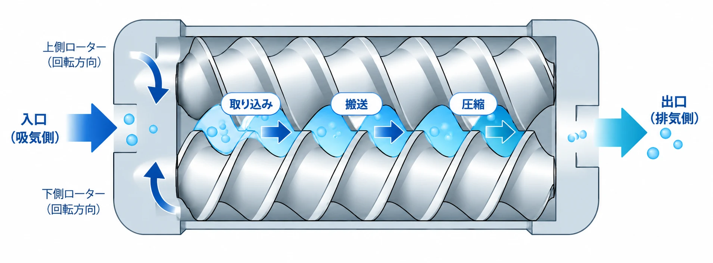
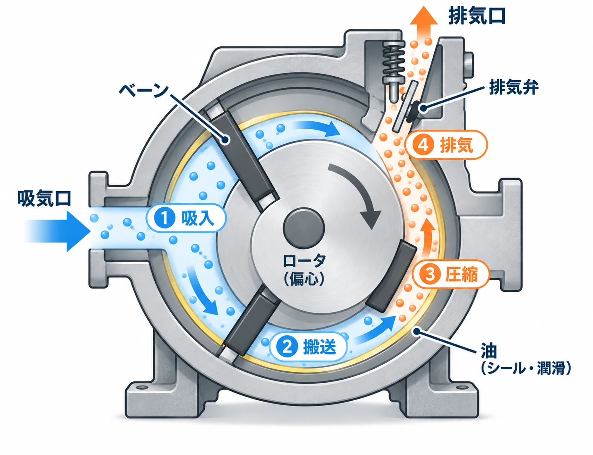
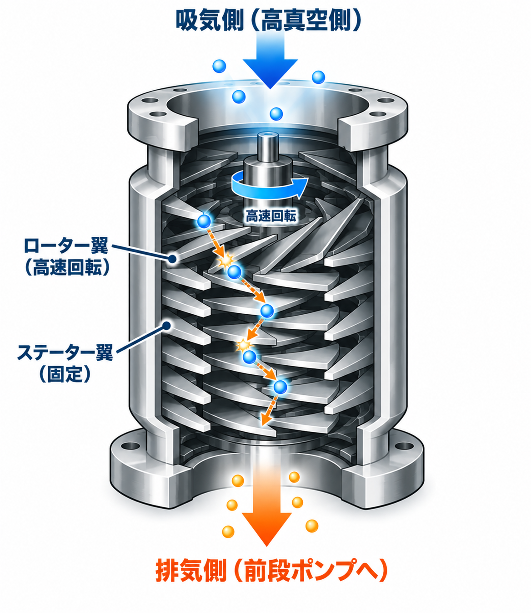
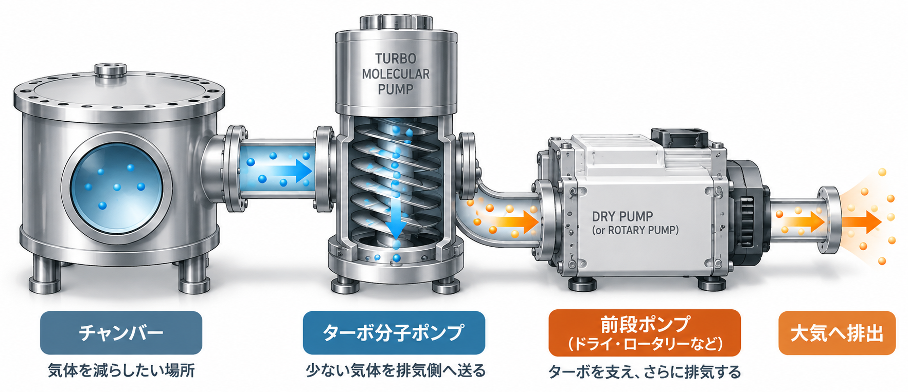

葵（あおい）
ポンプって、どれも同じように空気を出してるんじゃないの？
02では、ポンプを組み合わせて真空をつくりました。では、ポンプによって何が違うのでしょう？
葵（あおい）
ポンプって、どれも同じように空気を出してるんじゃないの？
陽斗（はると）
気体を外へ出すのは同じでも、やり方が違うのかな？
けー子ちゃん先生
そうですね。真空ポンプは、気体を外へ出す目的は同じでも、気体の運び方に違いがあります。
では、ポンプはどうやって気体を運んでいるのでしょう？
まずは、気体を外へ運ぶ基本的な動きを見てみましょう。

※実際の気体の運び方は、ポンプの種類によって異なります。
では、実際のポンプを見てみましょう。
真空ポンプにはさまざまな方式があり、油を使うものと、気体を圧縮する部分に油を使わないものがあります。ここでは、ドライポンプの代表例としてスクリュー式を見てみましょう。
スクリュー式では、2本のねじ形ローターが回転し、気体を閉じ込めながら出口側へ運びます。

※実際の内部形状や気体の圧縮のしかたは、機種・方式によって異なります。実機の構造例はページ下部の参考資料から確認できます。
気体の通り道に油を使わないから、ドライなんだ！
気体と油が接触しにくいため、真空容器や製品を油で汚染しにくいのが特徴です。
※ドライポンプには複数の方式があります。「ドライ」は、気体を圧縮する部分に油を使わないという意味です。軸受など、気体を圧縮する部分以外には潤滑油やグリースが使われることがあります。
では、あえて油を使うポンプには、どんな良さがあるのでしょう？
ロータリーポンプの代表例が、ロータリーベーンポンプです。ベーンで気体を閉じ込め、ロータの回転とともに排気側へ運びます。

ベーンで閉じ込められた気体は、排気側へ進むにつれて空間が小さくなり、圧縮されます。圧力が高まると排気弁が開き、気体が外へ排出されます。
ポンプ油は、部品のすき間をふさいで気体が戻りにくくするほか、ベーンやロータの潤滑にも役立ちます。
※図はロータリーベーンポンプの動きを理解するための模式図です。内部構造やベーン・排気弁の形状などは機種によって異なります。

気体を閉じ込めて運ぶのは似てるけど、こっちは油も使うんだね。
気体が少なくなってくると、少ない気体分子を効率よく排気する方法が活躍します。ターボ分子ポンプは、高真空をつくるときに使われる代表的なポンプです。

高速回転するローター翼が気体分子に衝突し、排気側へ運動量を与えます。分子はローター翼とステーター翼を通過しながら、前段ポンプ側へ送られます。
ただし、ターボ分子ポンプだけで大気圧から高真空までつくるわけではありません。ある程度気体を減らしてから使い、ドライポンプなどの前段ポンプと組み合わせて運転します。
※図はターボ分子ポンプの働きを理解するための模式図です。気体を送風機のように押し流すのではなく、少ない気体分子にローター翼が作用して排気側へ送り出します。

高真空までいけるなら、最初からターボだけ使えばいいんじゃない？

でも「02 どうやって真空をつくるの？」で、ポンプにはそれぞれ得意な圧力の範囲があるって習ったよね。

その通りです。ターボ分子ポンプは、ある程度気体を減らしてから力を発揮するポンプなんです。
ターボ分子ポンプは、前段側のポンプと組み合わせて高真空をつくる。

高真空で運転しているときの気体の経路の例です。始動時のバルブや粗引き経路は省略しています。
得意な領域はきっぱり分かれるのではなく、重なる部分があります。

あれ？ 真空をつくるときは前段ポンプが先なのに、気体はターボから前段ポンプへ流れるの？
そうです。真空をつくる順番と、高真空で運転しているときの気体の流れは分けて考えると分かりやすいですよ。
真空をつくるとき：まず前段ポンプなどで圧力を下げ、その後ターボ分子ポンプが活躍します。
高真空で運転中：気体はチャンバー → ターボ分子ポンプ → 前段ポンプへ流れ、最後は大気へ排出されます。
ドライポンプや油回転式ロータリーポンプなどが活躍。
まず気体をたくさん減らすのが得意。
ターボ分子ポンプは、前段ポンプが圧力を下げた後に活躍します。前段ポンプと組み合わせて使用します。
気体が少なくなった領域で力を発揮する。
得意な圧力範囲は機種・方式・気体・装置条件で異なります。ここでは数値を暗記する必要はありません。
代表的な真空ポンプには、ドライポンプ、ロータリーベーンポンプ、ターボ分子ポンプなどがある。
ポンプには、それぞれ得意な圧力範囲がある。
1台ですべてを担当せず、得意な範囲を活かして組み合わせることがある。
図は仕組みを理解するための概念図です。形状・粒子数・圧力範囲は実機を再現していません。